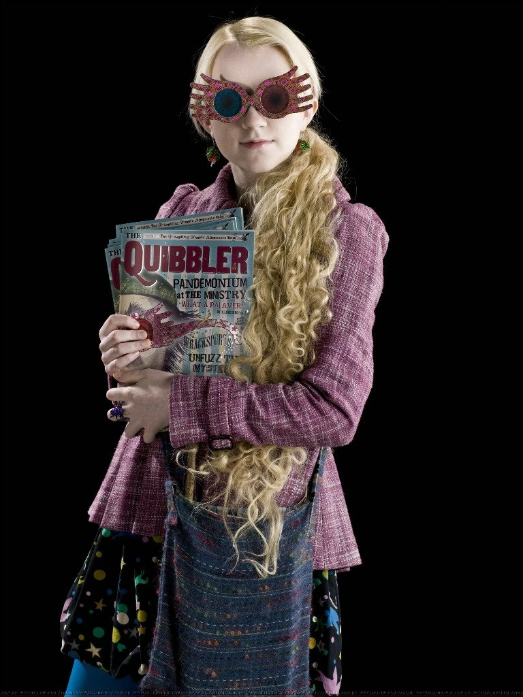

拉文克劳
创办人：罗伊纳·拉文克劳
创始人遗物：拉文克劳的冠冕（可以增加佩戴者的智慧）
代表动物：鹰
代表色：蓝色、青铜色
象征元素：风分院帽：如果你头脑精明，你也许属于智慧的拉文克劳，那些睿智博学的人，总会在那里遇见他们的同道。
常驻幽灵：格雷女士（海莲娜·拉文克劳，罗伊纳·拉文克劳的女儿）
公共休息室：塔楼位于霍格沃茨城堡的西边。一间很大的圆形屋子，墙上开着雅致的拱形窗户，挂着蓝色和青铜色丝绸。天花板为一穹顶，上面缀有星星，下面的深蓝色地毯上也缀有星星。房间里有桌椅、书架，门对面的壁龛中放有的罗伊纳·拉文克劳的半身白色大理石像。塑像旁边的一扇门通往上面的宿舍。
代表人物：
卢娜·洛夫古德 秋·张 菲留斯·弗立维 